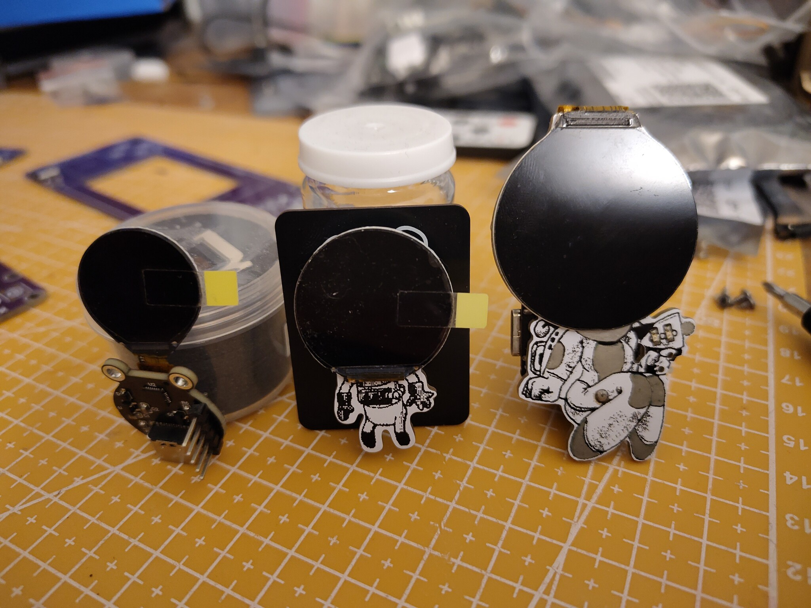

Smart Doll Badges¶
Published on 2026-04-12 in Astro-chan Badge.
I came back recently to those projects, mostly because I was making more of the Dupe SAO for the upcoming conferences, and I posted some photos of them that interested some people, and I had some discussions with them. I think I want to try exploring this a little bit more.
Attachment¶
The idea behind the original Astro Chan was to make it work like a “smart doll”, sitting on your shoulder and looking alive. Turns out that there is a reason why we don’t see people on the street with dolls attached to their shoulders: it’s very uncomfortable, it’s difficult to attach the doll in a way that makes it look right, and it gets in a way all the time. So it ended up in its secondary use, as a desk adornment. But for that we don’t need a battery, and a better placement of the USB socket would help.
The Dupe SAO is easy in comparison. It simply plugs into a conference badge, and you wear it with the badge on your neck. There is no battery or USB, there isn’t even a power switch – the badge provides all that. The SAO can be really minimalistic this way.
Now I would like to revisit the idea of a standalone gadget, and I would like it to work as a desk adornment still, but also as a wearable that doesn’t require an additional badge. Looking at how people usually carry such dolls, there are several possible options: dangling at a handbag or backpack, attached to the strap of a backpack or shoulder bag, or simply inserted into a breast pocket or a front pocket. The last one is the most appealing to me, but I think that with some careful design, I can accommodate all three options.
Display¶
When I started with Astro Chan, round displays were a novelty in the maker community. The 1.28” GC9A01 display I used was basically the only one widely available, and you couldn’t even get FPC sockets for it – I had to use the version that solders directly to the PCB.
Fast-forward a few years, and we have a whole bunch of options now. Tha Dupe SAO used a 0.99” GC9107 display with a ridiculously long ribbon cable, because that’s what was available. A few months later, I redesigned it for a shorter ribbon cable and 8-pin connector, because that version of the displays became available. I also used a 0.71” GC9D01 display for my pendant project – again with a ribbon cable soldered to the PCB. Now you can get them in the socket version too, and even also with a ridiculously long ribbon, if you want.

But interesting things are also happening on the other end of the size spectrum. There is a number of new displays available based on the ST77916 controller, which supports 360x360 resolution, and a variety of protocols, from the usual SPI and 8-bit RGB, to more exotic QSPI and even MIPI DSI. They come in sizes from 1.46” to a whooping 1.85”, with different protocols enabled by default. The 1.85” one is especially interesting, because on its 39-pin ribbon cable it has exposed all the signals the controller uses, including the protocol selection pins, and vertical and horizontal sync pins. I can’t wait to get my hands on some of those, and see what I can do with them. The relatively high resolution is a worry – pushing so many pixels takes time – but hopefully it can be fast enough for smooth animations with the right protocol.
Storage¶
Astro Chan just used a ready development board with built-in flash chip, and CircuitPython that used that flash as a filesystem, with GIF files on that filesystem for individual animations. This is perfectly fine for a one-off project, but wasteful if I wanted to make more.
With the Dupe SAO, on the other hand, I went for minimalism. It only has a single CH32V203 chip, and all the graphics data is included in the firmware itself. That limits me to about 9 frames of animation total, but I’m only using three anyways. This is fine for a janky little SAO, but if I wanted something more polished, more memory would be nice.
Selecting a microcontroller that has more flash memory available on board is not optimal cost-wise – they tend to also have more RAM and pins and generally be more powerful, and we don’t really need any of that. I think the most cost-effective solution is to actually use a cheaper microcontroller with just enough memory to hold our program, and keep all the graphics data on a separate ROM or flash chip, possibly in a format suitable to just piping directly to the display. Ideally you would use two separate SPI peripherals for this, but with buffering a single SPI with two CS pins could possibly work too, I need to do some testing to see.
Of course the problem of getting the data onto that flash chip appears. For microcontrollers that naturally use an external flash for their code, like the ESP32 family or the RP2040 and RP2350, you can just use their bootloader and regular flashing tools for that. But those chips tend to be rather expensive and require a lot of external components. With the smaller chips like the CH32 family, we would need to have a separate tool for flashing the graphics, possibly flashing a dedicated firmware for that, flashing the data, and then flashing the final firmware for playing of the animations. Flashing the chips with a separate device connected to some test points is also an option.
Functionality¶
But what does it do?
At a minimum, it only displays a fixed animation of the face with eyes blinking and maybe some minimal movement, to make it seem alive. That’s what the Dupe SAO does, and I think it works pretty well for a SAO. Anything more wouldn’t be visible anyways.
With the Astro Chan I tried to make it more interactive – I added an accelerometer sensor, so that I can play different animations depending on the doll’s orientation and movements. While this sounds cool in theory, in practice I only had the energy to make one extra animation, beyond the blinking eyes. With some more work and better tooling, and also better detection of movement patterns, it should be possible to do some interesting things, but my resources are limited.
What are other possibilities? A friend suggested that a doll of a character from a game called “Oxygen Not Included” should have a CO₂ sensor on board, and display increasingly distressed suffocating animations depending on air quality. While I like the idea, and it would be very useful for a desk adornment, good quality CO₂ sensors are expensive, and it’s difficult to get good quality data from them (you have to take into consideration humidity and temperature, etc.).
A distance, light, or gesture sensor could be mounted on the front of the doll to make it react to hand movements in front of it. An NFC reader or a camera reading QR codes could allow it to react to special cards waved in front of it.
Microphone would allow it to react to sounds, from simple reactions to loud sounds, to bobbing its head to music, to even reacting to predefined keywords. There are examples of word recognition done on small microcontrollers.
If the doll is connected to power over USB, it could also appear as a USB device. This could be a disk, allowing customization of the animations by copying data files to it, or it could be a HID or serial device. If it pretended to be a keyboard, it could react to CapsLock and NumLock states. A serial device could receive commands from an app or website, to change settings or trigger behaviors.
A real-time clock could allow behaviors based on time of the day or calendar. If there was a way to configure it, it could act as an event reminder. A speaker could be added to enable making sounds, with the sound data stored together with the graphics data.
If a WiFi or Bluetooth capable module is used, it could integrate with a phone app or even with IoT environment. This is a whole pandora box of complexity.
Movement¶
Using a display for the head enables us to make it seem like the face or even entire head is moving, without actually mechanically moving anything. But what if we added some servos to that construction, to enable more movement?
It could be something very basic, like just rising or lowering the hands, or it could be a fully articulated humanoid robot, at the other extreme. Two servos would allow us to move the head. A single servo in the base could allow rotating the entire doll.
Unfortunately, mechanical movement adds an entirely new category of problems. Power requirements skyrocket, basically requiring a LiPO battery. The micro-servos that we can use are pretty delicate, and could be easily damaged by rough handling by the users. If we used stronger servos, then pinching injuries have to be considered. And of course mechanical complexity, and work required to assemble the device suddenly grow as well.
I think that keeping interactions to the display and maybe blinking lights is preferable.
Summary¶
In the immediate future, I have some new displays to tests, and some code to write to read data from flash chips and send them to displays. While doing that, I might be able to get the USB disk working as well. In the more distant time, I might be able to play some more with various sensors and see if I can trigger animations based on them. Head bobbing to music seems to me to be particularly interesting, though I have absolutely no idea how to actually make that happen with code – I’ve seen some rhythm detection Arduino examples before, but never tried them.
I will keep reporting on my progress here.